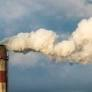
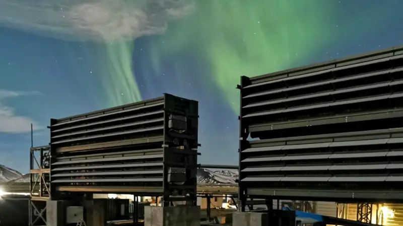
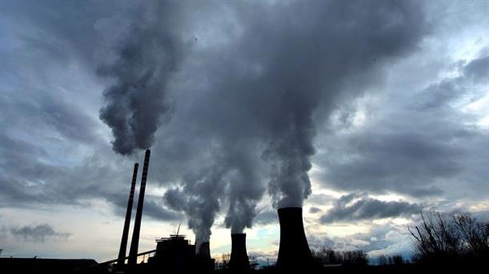
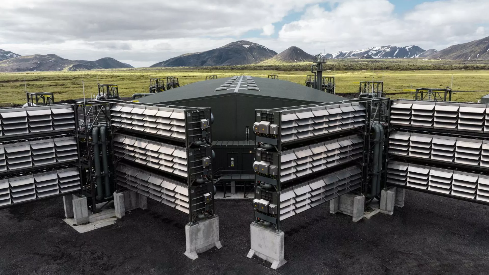

Tecnologias que ayudan y ayudaran a combatir el cambio climatico
Descubre cómo tecnologías como las energías renovables, la captación de CO2 y la digitalización están ayudando a combatir el cambio climático y a transformar nuestro futuro.

Las emisiones mundiales de CO2 batieron un nuevo récord en 2021: así fueron los últimos 5 años
El carbón supuso el 40 % del aumento de las emisiones mundiales de CO2 de 2021, hasta los 15.300 millones de toneladas.

Cómo funciona en Islandia la primera planta que captura el CO2 y lo transforma en roca
A través de ventiladores gigantes que parecen aires acondicionados, Climework retira 4.000 toneladas de CO2 de la atmósfera al año.

El 80 % de las emisiones globales de CO2 está vinculado a 57 productores de combustibles fósiles y cemento
En la lista de empresas más contaminantes hay compañías como Saudi Aramco, Gazprom, Coal India, National Iranian Oil Company, BP, Shell, Total Energies, Eni, RWE o Repsol..

Se inaugura en Europa la mayor planta de captura de CO2 del mundo
Climeworks está aprovechando la energía geotérmica de Islandia, mientras se prepara para una capacidad de megatoneladas en todo el mundo.